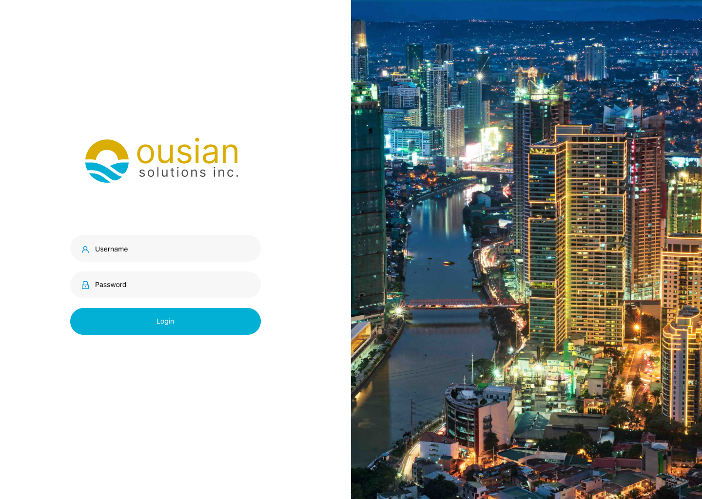

Ousian HRIS
A comprehensive Human Resource Information System for Ousian Solutions Inc. — covering employee self-service, leave management, attendance, payroll, announcements, and organizational tools in a single unified platform.
One system for every HR process
HR teams were managing employees across disconnected spreadsheets, paper forms, and siloed tools. There was no single place to view leave balances, process payroll, track attendance, or communicate with staff.
I was brought in to design the full UI/UX for Ousian HRIS — from the login experience through every employee-facing and admin-facing module — and to provide front-end implementation support.

Login — split-panel layout with city visual and clean credential form

Employee Home — quick-access shortcuts, leave summary YTD, announcements, health & wellness, upcoming birthdays, leaves, open positions, and policy resources all in one view
What I designed
Employee Home
Personalised dashboard with quick-access shortcuts, leave summary, announcements, team events, and job openings — all visible at a glance after login.
Employee Management
Employee profiles, onboarding flows, department structures, and role management with clear data hierarchy across the organisation.
Leave Management
Leave request forms, multi-level approval workflows, YTD balance tracking, and calendar views for team absence visibility.
Attendance & Time
Daily time records, shift logs, tardiness flags, overtime tracking, and attendance reports with filter and export capabilities.
Payroll & Salary
Payroll processing screens, deduction management, payslip generation, and approval sign-off flows accessible to both HR and employees.
Design System
A shared Figma component library — inputs, tables, modals, status badges, and navigation — ensuring visual consistency across all modules.
Cleaner operations, empowered employees
The unified HRIS eliminated manual paperwork and gave every employee a single place to manage their HR needs. HR teams gained real-time visibility, faster approvals, and consistent data. The design system ensured the platform could scale with new modules without losing visual coherence.